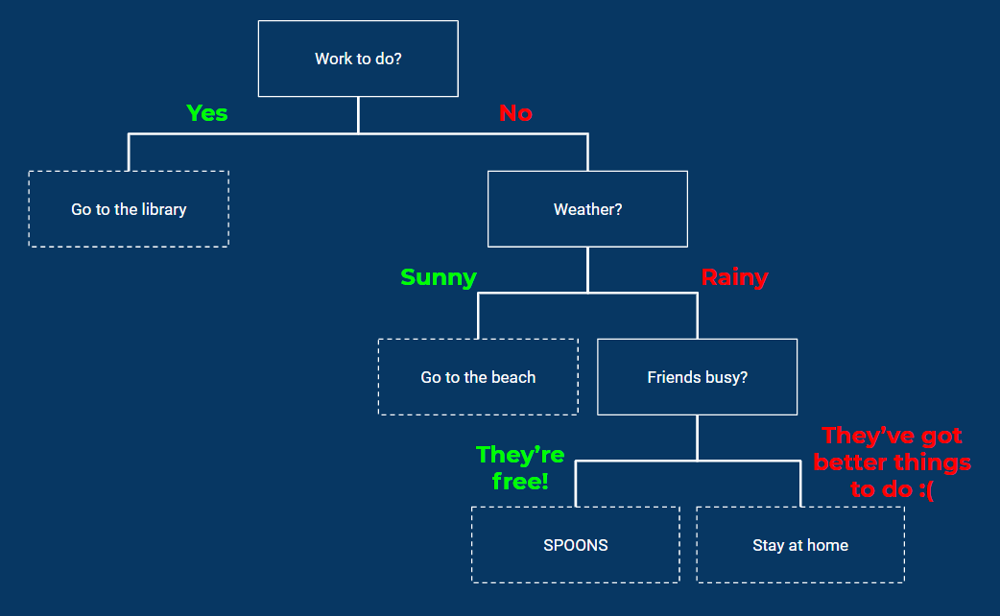

Objective
The goal of this session is to create Decision Trees - a simple method of allowing a program to make it's own choices based off of the information that it receives.
Installation & Setup
As always, we're using Python3. If you have not already downloaded and installed Python 3, please let one of the committee know - you will need it for future sessions to it's best we sort out any installation problems now.
For this session, we will also need to grab a few libraries. For this, we are going to need to open a Command Prompt or Terminal (depending on your Operating System) and run the following commands individually:
pip install scikit-learnpip install matplotlibAgain, if any of these commands do not work please let the committee know now so that we can resolve these issues. We're going to be using pip installs in the majority of sessions as it is an incredibly simple and useful tool so we need to ensure everyone has it up and working.
Starting simple
Let's double check we know what we're actually trying to make. A decision tree takes a set of input data, and then runs it through a set of "decisions" to reach an end result.
These decisions could be anything we want them to be: Is the price of the item > £4.20? Is the time of day earlier than 14:41? Is my name Barry Bee-Benson?
We can keep making decisions until we are as certain as we can be that we have an answer to output.
Let's model a very simple decision tree, using the one from this week's presentation:
As shown in the presentation, we can model this through a series of if statements:
def organise_life(work_to_do, weather, friends_are_busy):
if not work_to_do:
if weather == "rainy":
if friends_are_busy:
print("stay at home")
else:
print("SPOOOOOOOOONS")
else if weather == "sunny":
print("go to the beach")
else:
print("stay at home")Reading through the code, you can see that the function takes in three input parameters: work_to_do, weather and friends_are_busy.
Then, the program first asks "Have you got any work to do?". If the answer to this question is False (yes) then it moves on to the next question. If the answer to that question is True (no) then the program will print "stay at home" and exit.
Then, the program asks "What is the current weather?". If the answer to this question is "rainy" then it moves on to the next question. Else, if the answer to that question is "sunny", the program will print "go to the beach" and exit.
Finally, the program asks "Are your friends busy?". If the answer to this question is True, the program prints "stay at home" and exits. Else, if the answer to that question is False, the program prints "SPOOOOOOOOONS" and exits.
Why not try and run it yourself? Here are some parameters you should try:
organise_life(True, "rainy", False)organise_life(False, "rainy", False)organise_life(False, "rainy", True)organise_life(False, "snowy", True)What can we observe from the above? Discuss.
Naturally, this system is not without limitation. For big decision trees, we must think of an alternative solution.
Using scikit-learn to generate Decision Trees
Scikit-learn is a library used for various applications in Artificial Intelligence. Today, we're going to use it to generate decision trees automatically given an input set of classifications.
Decision Trees learn from the data given to approximate the best possible set of decision rules.
First, let's use one of sklearn's built-in datasets.
In a new Python file, run the following code:
from sklearn.datasets import load_iris
iris = load_iris()
print(iris.DESCR)Breaking the code down line by line, the first line imports the dataset to our program so that we can use it in the first place. The second line tells the program to load the dataset and store it to a variable, iris. The third line then tells the program to print out a description about the dataset.
The TL;DR of the dataset is that it contains 3 classes of 50 instances each, where each class refers to a specific type of iris plant. This dataset is ideal for testing code with the goal of classification, like ours.
In this example, we're going to build a decision tree that can, given input data, predict which classification of iris plant the input data relates to.
Let's alter our code to begin.
# Import necessary libraries
from sklearn.datasets import load_iris
from sklearn import tree
iris = load_iris() # Load iris dataset to variable
classifier = tree.DecisionTreeClassifier() # Create a "Classifier" variable, using the library we imported
classifier = classifier.fit(iris.data, iris.target) # Tell the classifier to "fit" the data - creating the internal decision tree
tree.plot_tree(classifier.fit(iris.data, iris.target)) # Print the tree to consoleAgain, let's break the code down line by line:
The first two lines import the necessary libraries.
As before, we then store the dataset to a variable, iris.
This time, we then create a classifier variable. This variable uses the sklearn library and stores all the necessary functions to create a decision tree to that variable. As mentioned before, it takes two parameters - iris.data is the data we wish to input and iris.target is a list of all possible classifications of iris flower (one of which we want outputted per inputted data).
Finally, we tell the program to plot the tree to the console.
Run it... what happens?
Making it usable
As you may have noticed in the previous section, it prints out the data in a format that's not entirely readable by us.
Let's adapt our program to deal with that.
# Import necessary libraries
from sklearn.datasets import load_iris
from sklearn import tree
from sklearn.tree.export import export_text
iris = load_iris() # Load iris dataset to variable
classifier = tree.DecisionTreeClassifier() # Create a "Classifier" variable, using the library we imported
classifier = classifier.fit(iris.data, iris.target) # Tell the classifier to "fit" the data - creating the internal decision tree
tree.plot_tree(classifier.fit(iris.data, iris.target)) # Plot the tree internally
result = export_text(classifier, feature_names=iris['feature_names']) # Export it in a human-readable format
print(result) # Print the tree in the human readable formatThis time, we've imported one additional library at the top, and changed our export code at the bottom.
These changes are mostly self explanatory but I will note the export_text function. This function takes two parameters: the classifier variable and the "feature names" of the tree. "Feature names" are stored in the iris dataset and are used to label the tree, without them it still wouldn't be readable by us (try it).
Further adaptation
Feeling confident? Feel free to tweak this code or try it on a different dataset (sklearn has many) to see what results you can create! Here are some resources to get you started: